2.4 Exercises in R
2.4.1 Anscombe’s Quartet Revisited
Consider the anscombe database once again:
## x1 x2 x3 x4 y1 y2 y3 y4
## 1 10 10 10 8 8.04 9.14 7.46 6.58
## 2 8 8 8 8 6.95 8.14 6.77 5.76
## 3 13 13 13 8 7.58 8.74 12.74 7.71
## 4 9 9 9 8 8.81 8.77 7.11 8.84
## 5 11 11 11 8 8.33 9.26 7.81 8.47
## 6 14 14 14 8 9.96 8.10 8.84 7.04
## 7 6 6 6 8 7.24 6.13 6.08 5.25
## 8 4 4 4 19 4.26 3.10 5.39 12.50
## 9 12 12 12 8 10.84 9.13 8.15 5.56
## 10 7 7 7 8 4.82 7.26 6.42 7.91
## 11 5 5 5 8 5.68 4.74 5.73 6.89Recall that in the previous Chapter we have
split the above data into four data frames
ans1, …, ans4 with columns x and y.
In
ans1, fit a regression line to the data set as-is.
Click here for a solution
We’ve done that already. What a wonderful exercise, thank you – learning is often done by repeating stuff.
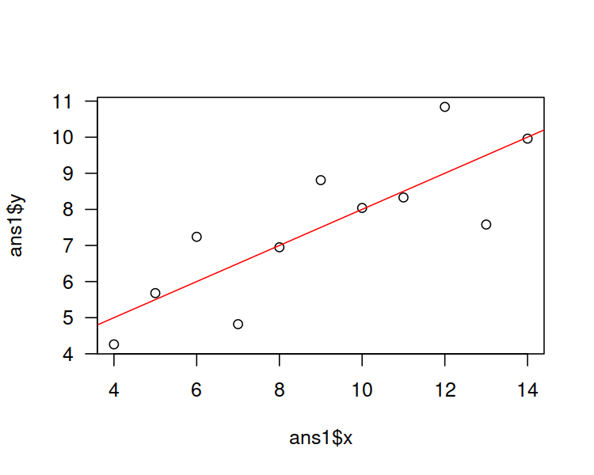In
ans2, fit a quadratic model (\(y=a x^2 + b x + c\)).
Click here for a solution
How to fit a polynomial model is explained in Lecture 3.
ans2 <- data.frame(x=anscombe$x2, y=anscombe$y2)
f2 <- lm(y~x+I(x^2), data=ans2)
plot(ans2$x, ans2$y, las=1)
x_plot <- seq(4, 14, by=0.1)
y_plot <- predict(f2, data.frame(x=x_plot))
lines(x_plot, y_plot, col="red")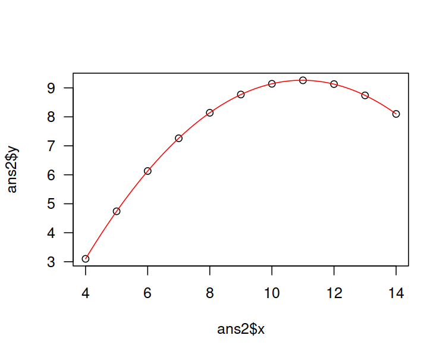
Comment: This is an almost-perfect fit! Clearly, the second Anscombe dataset isn’t a case of linearly dependent variables.
In
ans3, remove the obvious outlier from data and fit a regression line.
Click here for a solution
Let’s plot the data set first.
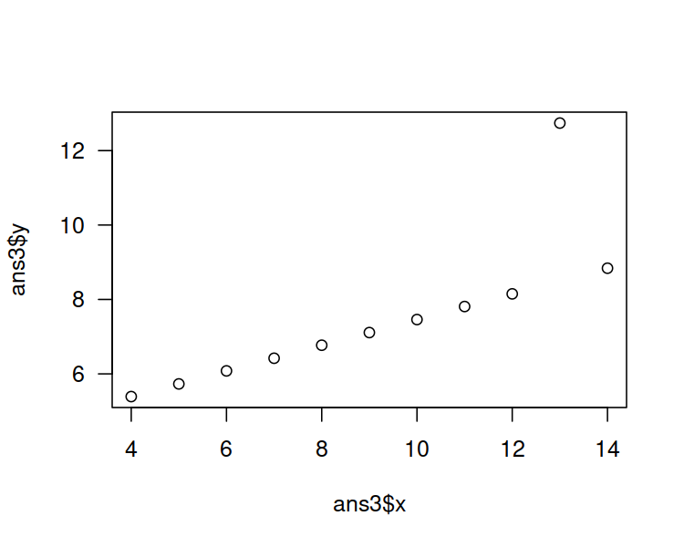
Indeed, the observation at \(x\simeq 13\) is an obvious outlier. Perhaps the easiest way to remove it is to call:
We could also use the condition y < max(y), amongst others.
Now let’s fit the linear model:
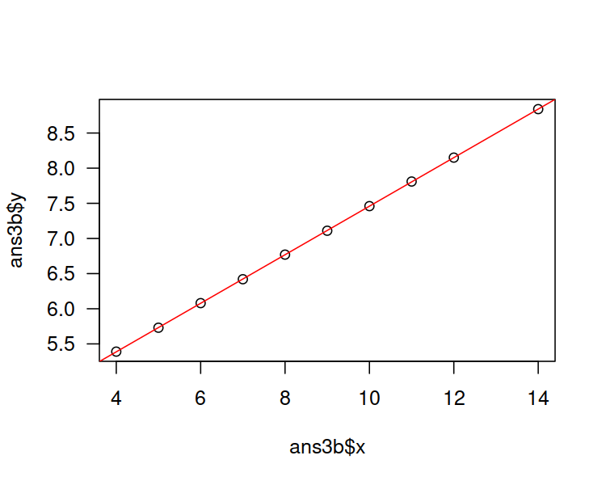
Comment: Now what’s we call linearly correlated data. By the way, Pearson’s coefficient now equals0.9999966.
2.4.2 Countries of the World – Simple models involving the GDP per capita
Let’s consider the World Factbook 2020 dataset
(see this book’s datasets folder).
It consists of country names, their population,
area, GDP, mortality rates etc. We have scraped it from the CIA website
at https://www.cia.gov/library/publications/the-world-factbook/docs/rankorderguide.html
and compiled into a single file on 3 April 2020.
Here is a preview of a few features for 3 selected countries (see help("%in%")):
factbook[factbook$country %in%
c("Australia", "New Zealand", "United States"),
c("country", "area", "population", "gdp_per_capita_ppp")]## country area population gdp_per_capita_ppp
## 15 Australia 7741220 25466459 50400
## 169 New Zealand 268838 4925477 39000
## 247 United States 9833517 332639102 59800List the 10 countries with the highest GDP per capita.
Click here for a solution
To recall, to generate a list of indexes that produce an ordered
version of a numeric vector, we need to call the order() function.
which_top <- tail(order(factbook$gdp_per_capita_ppp, na.last=FALSE), 10)
factbook[which_top, c("country", "gdp_per_capita_ppp")]## country gdp_per_capita_ppp
## 113 Ireland 73200
## 35 Brunei 78900
## 114 Isle of Man 84600
## 211 Singapore 94100
## 26 Bermuda 99400
## 141 Luxembourg 105100
## 157 Monaco 115700
## 142 Macau 122000
## 192 Qatar 124100
## 139 Liechtenstein 139100By the way, the reported values are in USD.
Question: Which of these countries are tax havens?
Find the 5 most positively and the 5 most negatively correlated variables with the
gdp_per_capita_pppfeature (of course, with respect to the Pearson coefficient).
Click here for a solution
This can be solved via a call to cor().
Note that we need to make sure that missing vales are omitted
from computations.
A quick glimpse at the manual page
(?cor) reveals that computing the correlation between a column
and all the other ones (of course, except country, which
is non-numeric) can be performed as follows.
r <- cor(factbook$gdp_per_capita_ppp,
factbook[,!(names(factbook) %in% c("country", "gdp_per_capita_ppp"))],
use="complete.obs")[1,]
or <- order(r) # ordering permutation (indexes)
r[head(or, 5)] # first 5 ordered indexes## infant_mortality_rate maternal_mortality_rate
## -0.7465825 -0.6700486
## birth_rate death_rate
## -0.6082201 -0.5721644
## total_fertility_rate
## -0.5672550## natural_gas_production gross_national_saving
## 0.5689764 0.6113255
## median_age obesity_adult_prevalence_rate
## 0.6208990 0.6368120
## life_expectancy_at_birth
## 0.7546062Comment: “Live long and prosper” just gained a new meaning. Richer countries have lower infant and maternal mortality rates, lower birth rates, but higher life expectancy and obesity prevalence. Note, however, that correlation is not causation: we are unlikely to increase the GDP by asking people to put on weight.
Fit simple regression models where the per capita GDP explains its four most correlated variables (four individual models). Draw them on a scatter plot. Compute the root mean squared errors (RMSE), mean absolute errors (MAE) and the coefficients of determination (\(R^2\)).
Click here for a solution
The four most correlated variables (we should look at the absolute value of the correlation coefficient now – recall that it is the correlation of 0 that means no linear dependence; 1 and -1 show a strong association between a pair of variables) are:
## [1] "obesity_adult_prevalence_rate"
## [2] "maternal_mortality_rate"
## [3] "infant_mortality_rate"
## [4] "life_expectancy_at_birth"We could take the above column names and construct four
formulas manually, e.g., by writing
gdp_per_capita_ppp~life_expectancy_at_birth,
but we are lazy. Being lazy when it comes to computer
programming is often a virtue, not a flaw in one’s character.
Instead, we will run a for loop that extracts the pairs of
interesting columns and constructs a formula based on two vectors
(lm(Y~X)).
Recall that the root mean squared error is the square root of the arithmetic mean of the squared residuals. Mean absolute error is the average of the absolute values of the residuals. The coefficient of determination is given by: \(R^2(f) = 1 - \frac{\sum_{i=1}^{n} \left(y_i-f(\mathbf{x}_{i,\cdot})\right)^2}{\sum_{i=1}^{n} \left(y_i-\bar{y}\right)^2}\).
par(mar=c(4, 4, 0.5, 0.5)) # smaller margins (bottom, left, top, right)
par(mfrow=c(2,2)) # 4 plots on a 2x2 grid
for (i in 1:4) {
print(most_correlated[i])
X <- factbook[,"gdp_per_capita_ppp"]
Y <- factbook[,most_correlated[i]]
f <- lm(Y~X)
print(cbind(RMSE=sqrt(mean(f$residuals^2)),
MAE=mean(abs(f$residuals)),
R2=summary(f)$r.squared))
plot(X, Y, xlab="gdp_per_capita_ppp", ylab=most_correlated[i], las=1)
abline(f, col="red")
}## [1] "obesity_adult_prevalence_rate"
## RMSE MAE R2
## [1,] 11.04095 8.158911 0.06219638## [1] "maternal_mortality_rate"
## RMSE MAE R2
## [1,] 204.9272 146.5324 0.2148087## [1] "infant_mortality_rate"
## RMSE MAE R2
## [1,] 15.74646 12.1665 0.3005046## [1] "life_expectancy_at_birth"
## RMSE MAE R2
## [1,] 5.429182 4.372718 0.4309554
Comment: Unfortunately, we were misled by the high correlation coefficients between the \(X\)s and \(Y\)s: the low actual \(R^2\) scores indicate that these models should not be deemed trustworthy. Note that 3 of the plots are evidently L-shaped.
Fun fact: (*) Interestingly, it can be shown that \(R^2\) (in the case of the linear models fitted by minimising the SSR) is the square of the correlation between the true \(Y\)s and the predicted \(Y\)s:
X <- factbook[,"gdp_per_capita_ppp"]
Y <- factbook[,most_correlated[i]]
f <- lm(Y~X, y=TRUE)
print(summary(f)$r.squared)## [1] 0.4309554## [1] 0.4309554Side note: Do note that RMSE and MAE are interpretable: for instance, average error of life expectancy prediction based on the GDP is 4-5 years. Recall that you can find the information on the variables’ units of measure at https://www.cia.gov/library/publications/the-world-factbook/docs/rankorderguide.html.
2.4.4 Countries of the World – A non-linear model based on the GDP per capita
Let’s revisit the World Factbook 2020 dataset (world_factbook_2020.csv).
Draw a histogram of the empirical distribution of the GDP per capita. Moreover, draw a histogram of the logarithm of the GDP/person.
Click here for a solution
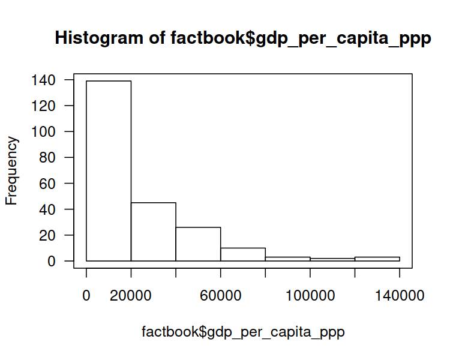
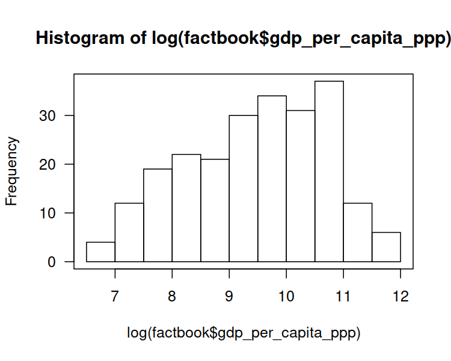
Comment: The distribution of the GDP is right-skewed: most countries have small GDP. However, few of them (those in the “right tail” of the distribution) are very very rich. There is the famous observation made by V. Pareto stating that most assets are in the hands of the “wealthy minority” (compare: power law, rich-get-richer rule, preferential attachment in complex networks). Interestingly, many real-world-phenomena are distributed similarly (e.g., the popularity of web pages, the number of followers of Instagram profiles). It is frequently the case that the logarithm of the aforementioned variable looks more “normal” (is bell-shaped).
Side note: “The” logarithm most often refers to the logarithm base
\(e\), \(\log x = \log_e x\),
where \(e\simeq 2.72\) is the Euler constant, see exp(1) in R.
Note that you can only compute logarithms of positive real numbers.
Non-technical audience might be confused when asked to contemplate the distribution of the logarithm of a variable. Let’s make it more user-friendly by nicely re-labelling the X axis:
hist(log(factbook$gdp_per_capita_ppp), axes=FALSE,
xlab="GDP per capita (thousands USD)", main=NA)
box()
axis(2, las=1) # Y axis
at <- c(1000, 2000, 5000, 10000, 20000, 50000, 100000, 200000)
axis(1, at=log(at), labels=at/1000)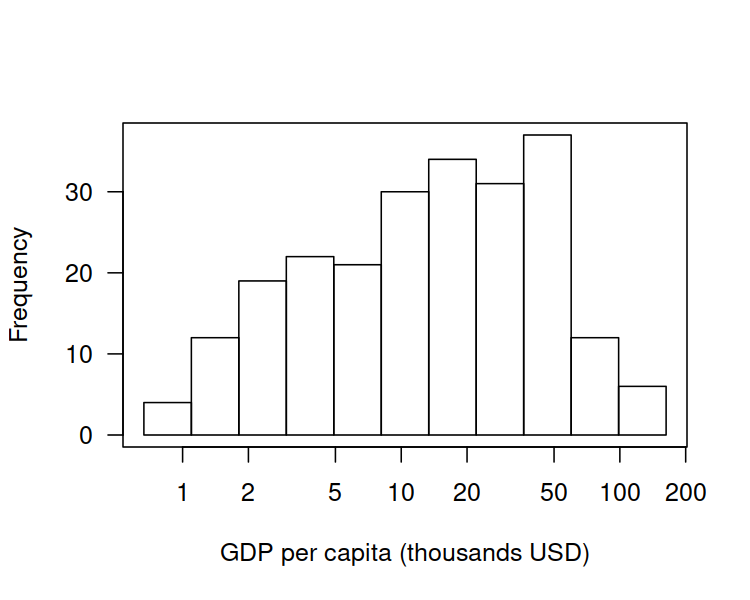
Comment: This is still a plot of the logarithm of the distribution of the per capita GDP, but it’s somehow “hidden” behind the human-readable axis labels. Nice.
Fit a simple linear model of
life_expectancy_at_birthas a function ofgdp_per_capita_ppp.
Click here for a solution
Easy. We have already done than in one of the previous exercises.
Yet, to learn something new, let’s note that the plot() function
accepts formulas as well.
f <- lm(life_expectancy_at_birth~gdp_per_capita_ppp, data=factbook)
plot(life_expectancy_at_birth~gdp_per_capita_ppp, data=factbook, las=1)
abline(f, col="purple")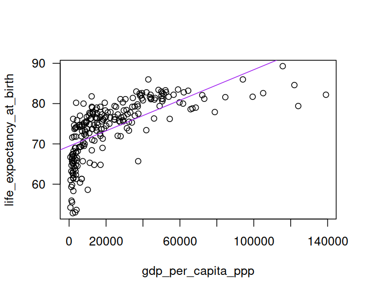
## [1] 0.4309554Comment: This is not a good model.
Draw a scatter plot of
life_expectancy_at_birthas a functiongdp_per_capita_ppp, with the X axis being logarithmic. Compute the correlation coefficient betweenlog(gdp_per_capita_ppp)andlife_expectancy_at_birth.
Click here for a solution
We could apply the log()-transformation manually
and generate fancy X axis labels ourselves. However,
the plot() function has the log argument (see ?plot.default)
which provides us with all we need.
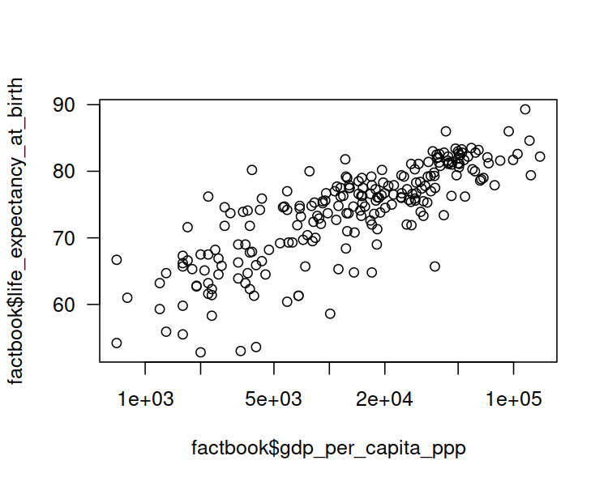
Here is the linear correlation coefficient between the logarithm of the GDP/person and the life expectancy.
## [1] 0.8066505It’s quite high, therefore we can try
Fit a model predicting
life_expectancy_at_birthby means oflog(gdp_per_capita_ppp).
Click here for a solution
We would like to fit a model of the form \(Y=a\log X+b\).
The formula life_expectancy_at_birth~log(gdp_per_capita_ppp)
should do the trick here.
f <- lm(life_expectancy_at_birth~log(gdp_per_capita_ppp), data=factbook)
plot(life_expectancy_at_birth~log(gdp_per_capita_ppp), data=factbook, las=1)
abline(f, col="pink3")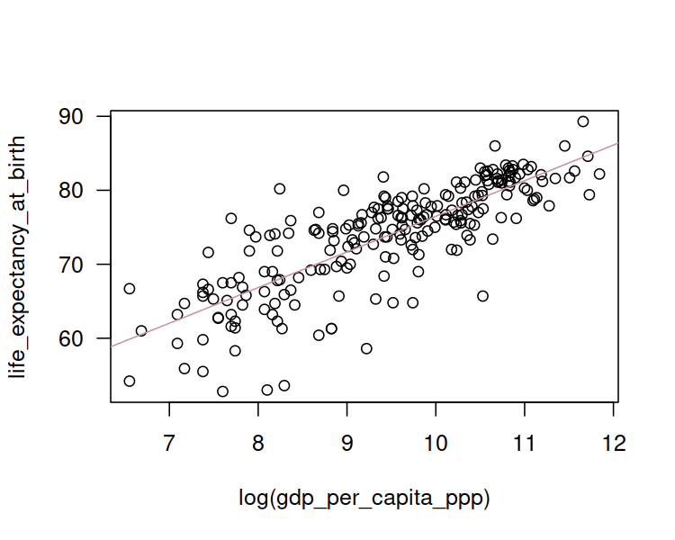
## (Intercept) log(gdp_per_capita_ppp)
## 28.306385 4.817806## [1] 0.650685Comment: That is an okay model (in terms of the coefficient of determination).
Draw the fitted logarithmic model on a scatter plot with a standard, non-logarithmic X axis.
Click here for a solution
The model fitted above is of the form \(Y\simeq4.82 \log X+28.31\). To depict it on a plot with linear (non-logarithmic) axes, we can compute this formula on multiple points by hand.
plot(factbook$gdp_per_capita_ppp, factbook$life_expectancy_at_birth, las=1)
# many points on the X axis:
xxx <- seq(min(factbook$gdp_per_capita_ppp, na.rm=TRUE),
max(factbook$gdp_per_capita_ppp, na.rm=TRUE),
length.out=101)
yyy <- f$coefficients[1] + f$coefficients[2]*log(xxx)
lines(xxx, yyy, col="turquoise3")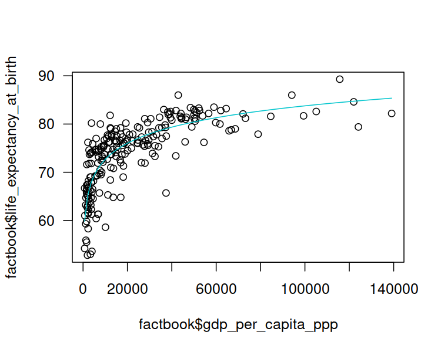
Comment: Well, people are not immortal… The original (linear) model didn’t really take that into account. Also, recall that correlation is not causation. Moreover, there is a lot of variability at an individual level. Being born in a less-wealthy country (e.g., not in a tax haven), doesn’t mean you don’t have the whole life ahead of you. Do the cool staff, do something for the others. Life’s not about money.
2.4.5 Countries of the World – A multiple regression model for the per capita GDP
Let’s play with World Factbook 2020
(world_factbook_2020.csv) once again.
World is an interesting place, so we’re far from being bored with this dataset.
Let’s restrict ourselves to the following columns, mostly related to imports and exports:
factbookn <- factbook[c("gdp_purchasing_power_parity",
"imports", "exports", "electricity_exports", "electricity_imports",
"military_expenditures", "crude_oil_exports", "crude_oil_imports",
"natural_gas_exports", "natural_gas_imports",
"reserves_of_foreign_exchange_and_gold")]Let’s compute the per capita versions of the above, by dividing all values by each country’s population:
We are going to build a few multiple regression models using the
step() function, which is not too fond of missing values, therefore
they should be removed first:
factbookn <- na.omit(factbookn)
c(nrow(factbook), nrow(factbookn)) # how many countries were omitted?## [1] 261 157Build a model for
gdp_purchasing_power_parityas a function ofimportsandexports(all per capita).
Click here for a solution
Let’s first take a look at how the aforementioned variables are related to each other:
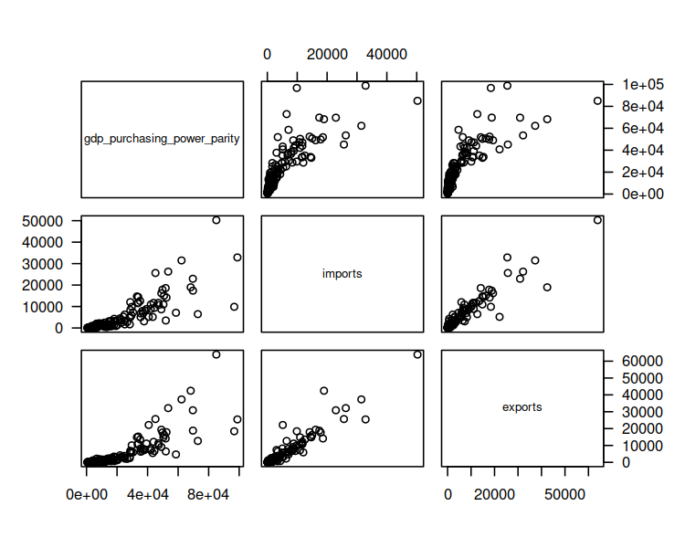
## gdp_purchasing_power_parity
## gdp_purchasing_power_parity 1.0000000
## imports 0.8289144
## exports 0.8189854
## imports exports
## gdp_purchasing_power_parity 0.8289144 0.8189854
## imports 1.0000000 0.9424084
## exports 0.9424084 1.0000000They are nicely correlated. Moreover, they are on a similar scale (“tens of thousands of USD per capita”).
Fitting the requested model yields:
options(scipen=10) # prefer "decimal" over "scientific" notation
f1 <- lm(gdp_purchasing_power_parity~imports+exports, data=factbookn)
f1$coefficients## (Intercept) imports exports
## 9852.5381318 1.4419398 0.7806693## [1] 0.6959805Use forward selection to come up with a model for
gdp_purchasing_power_parityper capita.
Click here for a solution
f2 <- step(lm(gdp_purchasing_power_parity~1, data=factbookn), # empty model
scope=formula(lm(gdp_purchasing_power_parity~., data=factbookn)), # full model
direction="forward", trace=0)
f2##
## Call:
## lm(formula = gdp_purchasing_power_parity ~ imports + crude_oil_exports +
## crude_oil_imports + electricity_imports + natural_gas_imports,
## data = factbookn)
##
## Coefficients:
## (Intercept) imports crude_oil_exports
## 7603.236 1.775 128472.216
## crude_oil_imports electricity_imports natural_gas_imports
## 100781.638 1.621 3.131## [1] 0.7865036Comment: Interestingly, it’s mostly the import-related variables
that contribute to the GDP per capita. However, the model
is not perfect, so we should refrain ourselves from building a brand new
economic theory around this “discovery”. On the other hand,
you know what they say: all models are wrong, but some might be useful.
Note that we used the adjusted \(R^2\) coefficient to correct
for the number of variables in the model
so as to make it more comparable with the coefficient corresponding
to the f1 model.
Use backward elimination to construct a model for
gdp_purchasing_power_parityper capita.
Click here for a solution
f3 <- step(lm(gdp_purchasing_power_parity~., data=factbookn),
scope=formula(lm(gdp_purchasing_power_parity~1, data=factbookn)),
direction="backward", trace=0)
f3##
## Call:
## lm(formula = gdp_purchasing_power_parity ~ imports + electricity_imports +
## crude_oil_exports + crude_oil_imports + natural_gas_imports,
## data = factbookn)
##
## Coefficients:
## (Intercept) imports electricity_imports
## 7603.236 1.775 1.621
## crude_oil_exports crude_oil_imports natural_gas_imports
## 128472.216 100781.638 3.131## [1] 0.7865036Comment: This is the same model as the one found by forward selection, i.e., f2.